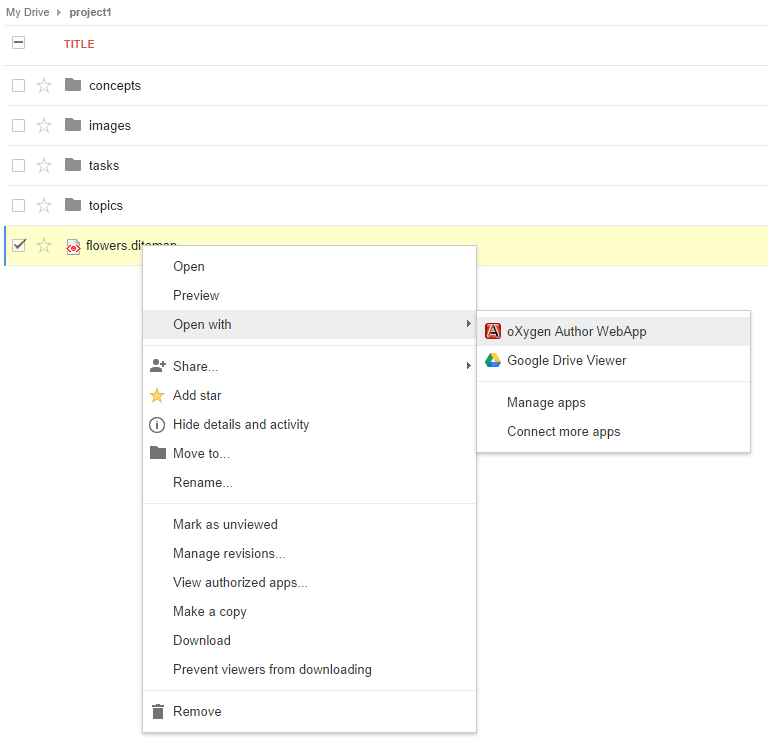
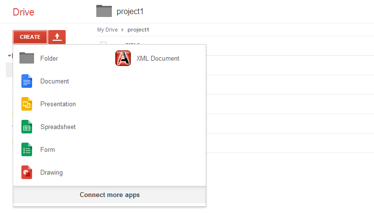

You can now open XML documents directly from your Google Drive account.
Note: If the app does not appear in the list, click on Manage Apps and check the Use by default checkbox and then press OK.
You can also create new XML documents starting from oXygen templates using the Create button in the Google Drive UI.
